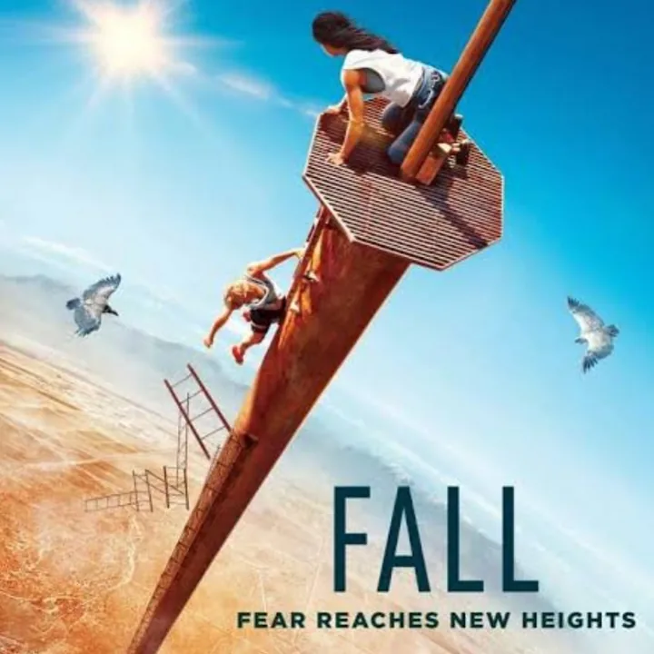
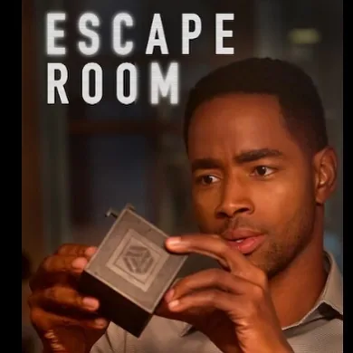

体ひとつ分の密室
オキシジェン
目が覚めたら医療用カプセルの中。残り酸素の数字がひとつ減るたび、自分の呼吸まで意識してしまう。
おすすめ度 ★ 4/5 · ホラー度 1/5海と密室、どっちが怖い？ 今夜閉じ込められたい場所から、一本選んでみて。
目が覚めたら医療用カプセルの中。残り酸素の数字がひとつ減るたび、自分の呼吸まで意識してしまう。
おすすめ度 ★ 4/5 · ホラー度 1/5
下をのぞくのが苦手ならこれ。塔のてっぺんで、手の届かないところにある水がどれだけ恋しくなるか。
おすすめ度 ★ 4/5 · ホラー度 2/5
潜り終えて水面に顔を出すと、帰りの船がいない。泳ぐ方向を自分で決められることが、こんなに心細い。
おすすめ度 ★ 2/5 · ホラー度 1/5
謎解き派にはこの一本。ゲーム開始の合図を待っていた時間まで、あとから手がかりに見えてくる。
おすすめ度 ★ 3/5 · ホラー度 1/5
すぐそばにいるはずの人が見えない。助けを呼ぶ声を頼りに進むうち、耳まで信用できなくなる。
おすすめ度 ★ 3/5 · ホラー度 1.5/5
砂浜も青い海も、最初は理想の休暇そのもの。家族の顔に起きた小さな変化から、その景色の意味が変わる。
おすすめ度 ★ 3.5/5 · ホラー度 1/5